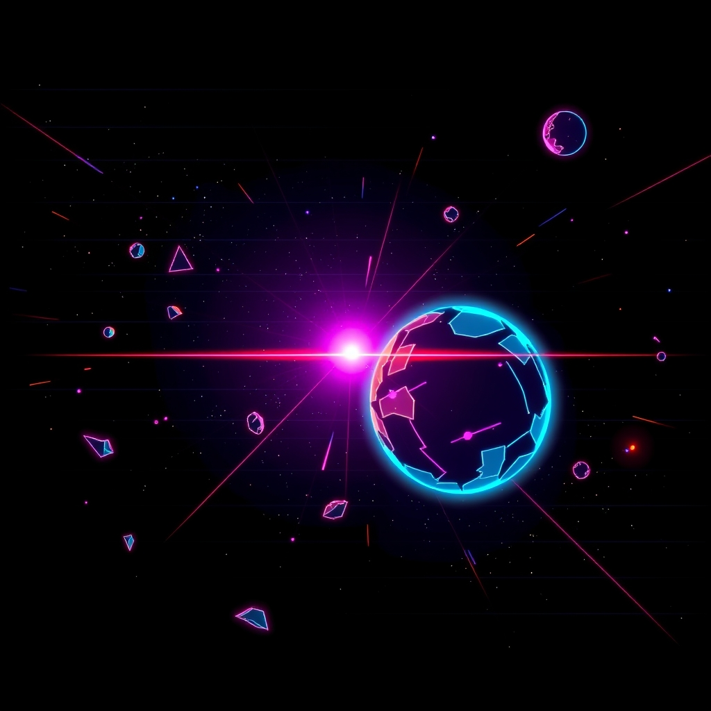

While v37 was on the cabinet, felix2072 did some housekeeping.
landed as “The paperwork from c94200e, filed” — 29 August 2026

what changed
XXXVIIchapterv37 felix207229 August 2026 · 17:41
felix207229 August 2026 · 17:41
Felix gave the pilot flying solo a mouse to aim with - a neon reticle with its own comet trail, a dampened swing so the hull does not snap around, and a keyboard tap that hands the wheel straight back.
landed as “The lone pilot picks up a mouse”
While v37 was on the cabinet, felix2072 did some housekeeping.
landed as “The paperwork from c94200e, filed” — 29 August 2026
While v37 was on the cabinet, felix2072 put a flight on the board.
landed as “felix2072 flies again, four ambushes flown clear” — 29 August 2026
While v37 was on the cabinet, David Friedrich changed the rules.
landed as “The rules pick one word, and it is event” — 29 August 2026
The rules themselves were altered: One term for an event, across GOLDEN_RULES.md, CLAUDE.md, the skills and the machinery. "Trap" is retired as vocabulary - it was never the API, and it collided with sh's own trap.
While v37 was on the cabinet, David Friedrich put a flight on the board.
landed as “Rank one changes hands, and it took two seats to do it” — 29 August 2026
While v37 was on the cabinet, David Friedrich changed the rules.
landed as “The paint machine lost its seed and kept painting” — 29 August 2026
The rules themselves were altered: Cloudflare's schema for flux-1-schnell stopped accepting the seed every plate in docs/art was asked with, and now refuses the whole request rather than ignoring the parameter - so the book's painter had been failing on both subjects, quietly, because a version with no plate simply has no plate and nothing says so. It asks seeded first and always, since ASTEROIDS_ART_MODEL means the model is not always this one and the seed is the whole of how a picture belongs to its subject rather than to the afternoon. A refusal that names the seed is asked again without it; anything else is an error like any other. What is lost is reproducibility - two clones painting the same subject no longer converge - and there is nothing on this end that can be done about that, so the header says so instead of promising it.
While v37 was on the cabinet, David Friedrich changed the rules.
landed as “The book stops filing pages nobody wrote” — 29 August 2026
The rules themselves were altered: docs/v37.html went onto main as a nought-byte file. The awk that writes the chapters is gawk 5.2.1 on the github runner, and gawk 5.2.1 corrupts its own heap and aborts partway through chapter thirty-seven - an awk program cannot address memory, so it cannot corrupt any, and the defect is the reader's rather than the book's. What cost a chapter is that tools/chronicle.sh did not look: it announced "37 versions, a page each" over a corpse, exited 0, and the ground crew filed what was left of the page. It reads the writer's exit status now and opens every page it promised before it declares a book, because stale is recoverable and wrong is the one nobody notices. .github/workflows/book.yml chooses mawk, which is on the same runner and finishes, so the guard does not turn a lost chapter into a red build on every landing instead. And the roster is put in an order rather than left to `for (p in pilots)`, which handed the names back one way on a mac and another way on the runner and had the two of them rewriting the cover past each other: most versions first, ties by name, the same list for every reader.
While v37 was on the cabinet, felix2072 did some housekeeping.
landed as “The paperwork from 3c0fca0, filed” — 29 August 2026
Drop a coin in this one: git checkout 3c0fca03